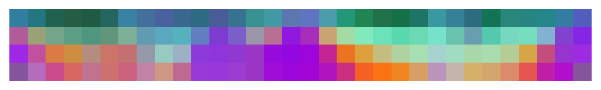
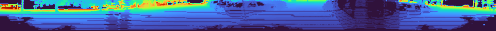
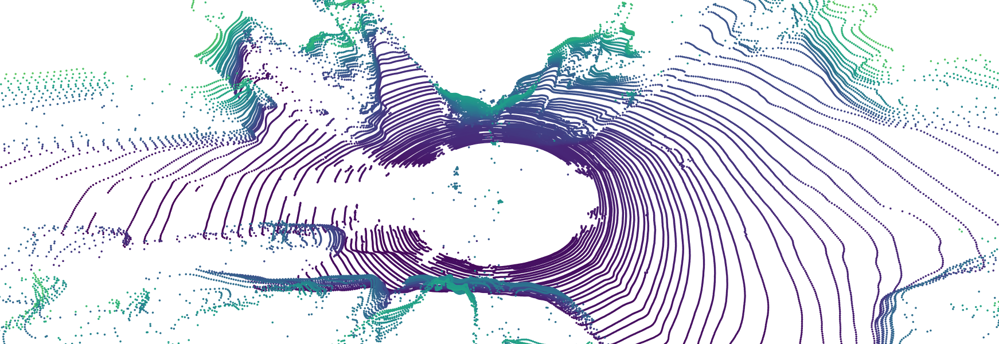
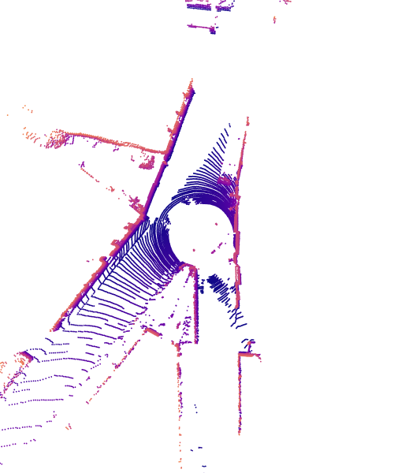

R3DPA：利用 LiDAR 的 3D 表示对齐和 RGB 预训练先验
简单摘要
在自动驾驶中，LiDAR因其精确的3D测量能力成为关键传感器，但采集和标注大规模真实LiDAR点云数据集极其昂贵耗时，尤其需考虑传感器密度变化时每种变体都需要独立数据集。这些挑战推动了对合成LiDAR数据生成的研究，包括虚拟环境中的LiDAR仿真和生成式学习方法。近期扩散模型在图像合成中展现了捕捉复杂数据分布的能力，使其成为LiDAR数据生成的潜力方向。早期扩散模型在像素级空间操作，潜在扩散模型（LDM）通过降维解决了高维表示的挑战，提供更快的训练和更高质量的生成。RGB图像合成进一步通过表示对齐得到推进——扩散模型对齐其内部表示与强大的自监督特征（如DINOv2），加速训练并提升生成质量。3D LiDAR点云场景生成遵循类似路径：部分方法针对点级生成，另一些聚焦点云的距离图像表示（相比无序点集提供结构优势）。然而现有方法未利用最先进图像扩散模型的进展：一是不利用类似REPA的自监督3D表示，二是完全从头在中型数据集（nuScenes、KITTI-360）上训练而无大型数据集预训练优势。

核心创新
第一，提出首个同时利用RGB图像先验和自监督3D表示的无条件LiDAR点云生成器——这是首次将2D基础模型先验和3D自监督特征同时引入LiDAR生成。第二，将生成模型的中间特征与自监督3D特征对齐——自监督3D特征为点云提供丰富的结构和语义信息，显著提升了生成质量和训练效率。第三，通过表示对齐策略克服了3D数据稀缺的限制——在仅有中型数据集的情况下利用预训练表示的迁移能力实现高质量生成。第四，在KITTI-360基准上生成质量超越先前最先进方法至少17%。
技术细节
我们使用潜在向量 z 进行解码以生成重建的距离图像。重建损失是在输入范围图像及其重建之间计算的。完成此步骤后，我们将解冻 FM 模型并继续进行完整的端到端训练。作者这样设计，是为了把这一节的输入、约束和输出关系讲清楚。
3 方法
我们的目标是通过将丰富的 3D 表示与从大规模图像数据集中学习的预训练 RGB 图像先验相结合来增强 3D LiDAR 场景生成。为了利用从大规模 RGB 图像数据集中学到的知识，我们使用在此类数据上预训练的权重来初始化潜在 FM 模型。为了解决这个问题，我们引入了 VAE 对齐训练方法，该方法以 3D 表示对齐为指导，以实现跨模态适应。作者这样设计，是为了把这一节的输入、约束和输出关系讲清楚。
3.1 预赛
我们使用潜在向量 z 进行解码以生成重建的距离图像。重建损失是在输入范围图像及其重建之间计算的。为了减轻 VAE 输出的典型模糊性，我们还引入了对抗性损失 ，它使用分片判别器来鼓励现实和清晰的重建，其动机是。作者这样设计，是为了把这一节的输入、约束和输出关系讲清楚。
$$ \begin{pmatrix} i \\ j \end{pmatrix} = \begin{pmatrix} ( 1 - ( \arcsin(p_z/ r) + f_{\text{down}} ) f_v^{-1} ) H \\ \frac{1}{2}(1 - \arctan(p_y/p_x) \pi^{-1}) W \end{pmatrix} $$
这条式子是在定义一个可直接计算的中间量：右侧把相对位置、方向、权重或比例关系组合起来，左侧则把这个组合结果记成后续模块要反复使用的变量。
3.2 R3DPA
表示对齐的目标是使用从预训练编码器中提取的特征来监督 FM 变压器的内部表示。完成此步骤后，我们将解冻 FM 模型并继续进行完整的端到端训练。端到端训练联合优化了VAE和FM模型（见图）。作者这样设计，是为了把这一节的输入、约束和输出关系讲清楚。
在联合优化期间，VAE 和 SiT 网络根据各自的目标进行更新，并结合。具体来说，我们在每个步骤中优化 (i) 使用 的 VAE，其中仅更新 VAE 的编码器权重，以及 (ii) 使用 的 FM 模型。FM 模型通常在标准化为单位方差的空间中进行训练。

$$ \mathcal{L}_{\textrm{Alignment}}(\theta,\phi) = -\mathbb{E} \Bigg[ \frac{1}{H} \frac{1}{W} \sum_{j=1}^H \sum_{i=1}^W \langle y_{(i,j)}, y_{(i,j)}^t \rangle \Bigg], $$
放在“方法”这一部分看。这条式子给出了训练阶段的优化目标。阅读时可以先看左侧到底在约束什么，再区分右侧每一项对应的是重建误差、正则项还是辅助监督。
实验结论
我们在 KITTI-360 数据集上进行了最先进的比较和消融实验。我们使用在不同特征表示上计算的 Fr'echet 距离来评估真实场景和生成场景的分布之间的距离。然而，我们观察到使用 RangeNet++ 的 FRID 分数与定性结果不相关，对于几何损坏的输入产生不切实际的好分数。
除了感知指标之外，我们还使用 Jensen-Shannon Divergence (JSD) 比较鸟瞰点分布的直方图。与最先进的比较 我们将我们的方法与 SOTA 场景生成方法进行比较。这可以稳定生成场景中的方向，从而允许使用非旋转不变指标进行评估。
4.1 实验装置
我们在 KITTI-360 数据集上进行了最先进的比较和消融实验。然而，我们观察到使用 RangeNet++ 的 FRID 分数与定性结果不相关，对于几何损坏的输入产生不切实际的好分数。除了感知指标之外，我们还比较直方图。
4.2 与最先进的比较
我们在表中呈现定量结果，在图中呈现定性比较。对于范围图像指标，其性能与 FRID 的最新技术相当，同时在 FLD 指标上实现了显着改进。在鸟瞰指标


理解评价
如果把这篇论文放回问题背景里看，它真正的价值在于：我们推出了第一个 LiDAR 场景生成方法，用于解锁 LiDAR 点云的图像预训练先验，并利用自监督 3D 表示来获得最先进的结果。这说明作者不是只补一个局部模块，而是在重新组织问题该怎样被解决。
最能支撑这个判断的，还是实验给出的证据：然而，我们观察到使用 RangeNet++ 的 FRID 分数与定性结果不相关，对于几何损坏的输入产生不切实际的好分数。换句话说，这些设计并不只是概念上更完整，而是实实在在改变了最终结果。
当然，它离真正成熟的方案还有距离：当前方案的主要局限在于它仍然受到计算资源、输入质量或场景复杂度的约束，离真正大规模稳定部署还有距离。后续更值得继续推进的方向，是 对于范围图像指标，其性能与 FRID 的最新技术相当，同时在 FLD 指标上实现了显着改进。